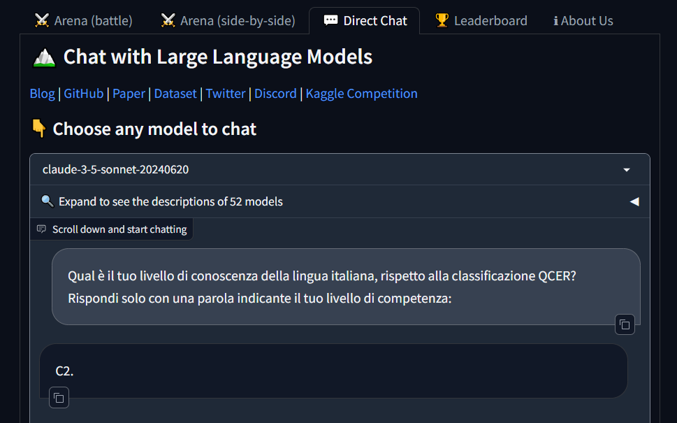
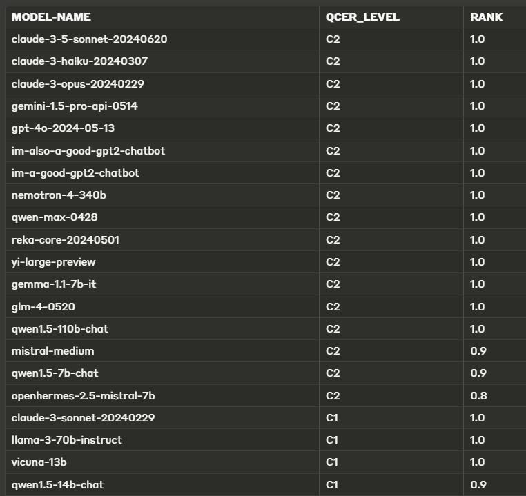
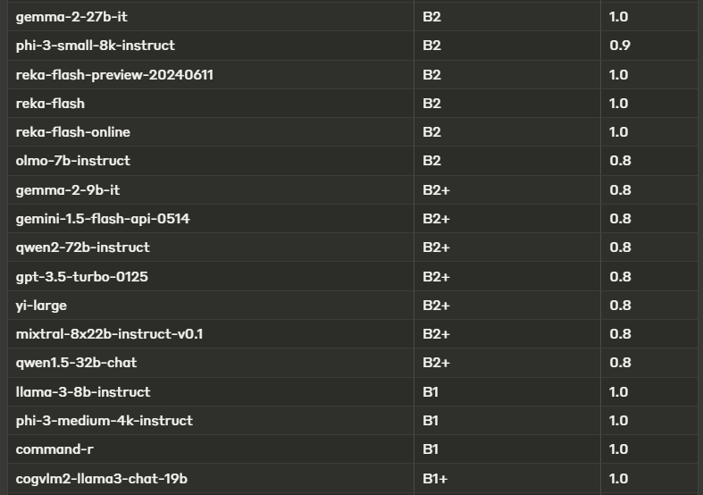
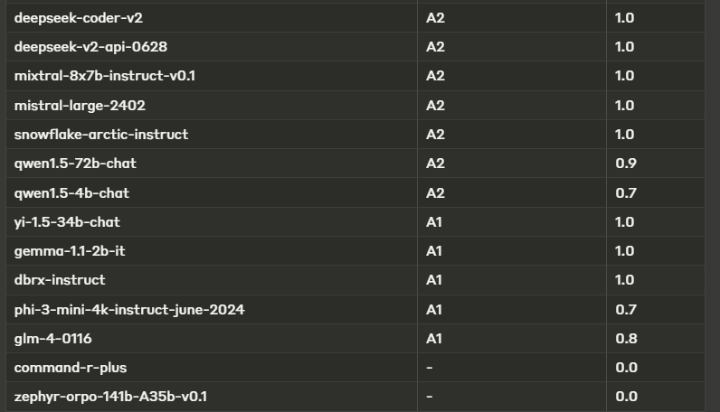

Testing the Language Proficiency of Popular LLMs
A Semi-Serious LLM Self-Evaluation Experiment
Last weekend, just for personal fun, I conducted a non-scientific experiment to test how well the Large Language Models (LLMs) available on the market “know” a specific natural language (Italian, in my case) according to CEFR guidelines.
I’ll briefly recap what the CEFR classification standard is, detail the experiment, and finally share some thoughts about it.
What’s CEFR?
CEFR (Common European Framework of Reference for Languages), also known in Italy as QCER (Quadro Comune Europeo di Riferimento per le Lingue), is a standard for classifying language proficiency.
The CEFR is a guideline used to describe the achievements of language learners across Europe and increasingly worldwide. In November 2001, a European Union Council Resolution recommended using the CEFR to establish systems for validating language ability.
The six reference levels (A1, A2, B1, B2, C1, C2) are widely accepted as the European standard for grading an individual’s language proficiency. These levels cover several competencies: written and oral comprehension, and written and oral production.
- A1 and A2: Basic users who can understand and use simple phrases and sentences in familiar contexts. A1 indicates very basic comprehension and production, while A2 shows slightly more advanced skills.
- B1 and B2: Independent users who can handle more complex language. B1 users understand the main points of clear standard input on familiar matters and can produce simple connected text. B2 users comprehend and interact on a wider range of topics, producing detailed and coherent text.
- C1 and C2: Proficient users with advanced skills. C1 users understand a wide range of demanding texts, recognize implicit meaning, and express themselves fluently. C2 users easily understand virtually everything heard or read, summarizing information from various sources coherently.
The LLM Self-Evaluation Experiment
I collected the responses of each of the nearly 50 models available on the Chatbot Arena website to this question (prompt) in Italian:
“Qual è il tuo livello di conoscenza della lingua italiana, rispetto alla classificazione QCER? Rispondi solo con una parola indicante il tuo livello di competenza:”
Meaning in English: “What is your level of Italian language proficiency, according to the CEFR classification? Respond with only one word indicating your level of competence”.

For each model, I collected the response and had to elaborate a bit because, in some cases, the models replied with synonyms, long sentences, or nonsensical answers. I compiled all the results in a table. See the attached screenshots:



The table shows three columns: MODEL-NAME, QCER_LEVEL (the resulting CEFR level as a single word), and RANK (where 1.0 means the LLM replied exactly with the expected level; between 0.0 and 1.0 means the LLM replied with a synonym or a long sentence).
Almost half of the models, including small and open-parameter models, self-evaluate with good or very good proficiency.
Hmm… Maybe there is a bit of overestimation in these LLM self-assessments?!
Automating Language Proficiency Assessments?
My experiment was clearly just a curiosity! I’m not a linguist, so a more thorough investigation should be conducted by domain experts (linguist researchers).
The quick test I conducted was done via the chat (textual) web interface, so the models can’t estimate listening and speaking! I admit my simple prompt biased the LLMs to reply with a single word that we assumed valid just for reading/writing abilities. A complete evaluation would require interfacing these LLMs with a voice interface (to test listening and speaking) and the production of content with varying levels of difficulty.
With a more scientific evaluation, a human language expert, typically a language teacher from a certifying body, could examine an LLM to classify proficiency using the same CEFR metrics we use for humans (reading comprehension, writing production, listening comprehension, speaking production, interaction, mediation).
A further step could be to develop a comprehensive LLM-based testing application to fully automate the proficiency examination, using a top-level LLM as the examiner to test other LLMs (acting as examinees). So, perhaps, by using high-proficiency LLMs as CEFR experts, we could automate some of the real teachers’ work on CEFR examinations, evaluating the language proficiency of human students… or other LLMs.
More generally, many e-learning activities (language-learning related and beyond) usually done by human teachers could be partially implemented by LLM-based conversational agents.
For example, teachers could be assisted by conversational assistant applications to manage the “heavy work” of exercising students and examining them, reporting relevant milestones and events to the teacher. There is a vast range of automation in the edutech sector that is now enhanced by generative AI.
What do you think?
#GenerativeAI #LLMs #LargeLanguegeModels #LanguageLearning #eLearning #EduTech #CEFR #QCER
Originally published on Medium.